我們在上午八時六分去到酒店旁的「관덕정」巴士站, 等了半小時才登上70號巴士, 怎料巴士路線十分迂迴曲折, 速度又慢, 有如觀光巴士, 首先在市區內拐了一大圈, 接著又往機場行一個大運, 然後才施施然正式向神奇之路進發。在地圖上看似不太遠的距離, 足足行駛了一小時多才抵達神奇之路附近的美術館, 下了車, 已經是早上九時四十一分, 遠遠超出我的估計!
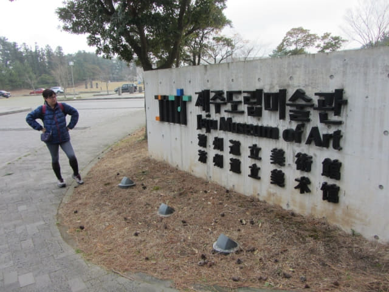
按原定計劃, 我們遊覽完神奇之路後會乘70號巴士返回濟州市區的長途巴士站 (제주시외버스터미널) , 然後開始市區漫步的行程。但看看巴士時刻表, 下一班的巴士是早上十時, 換句話說, 我們只有約二十分鐘的時間遊覽!
其實, 我對濟州市神奇之路的興趣真是不大, 只是既然來到濟州市, 便順便看看而已, 有點應酬的感覺。看看地圖, 神奇之路只是馬路中的一小段, 二十分鐘應該足夠遊覽完畢了!
接著匆匆離開巴士站, 朝神奇之路的方向走。經過 Jeju Love Land, 一個展示和性愛有關的公園。根據經驗, 這類公園的入場費並不便宜, 所以沒有打算進內參觀。
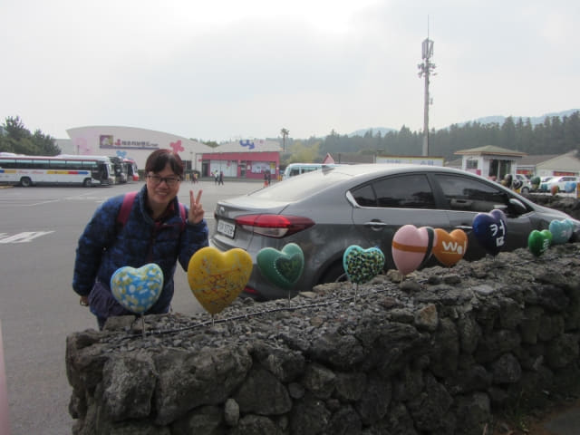
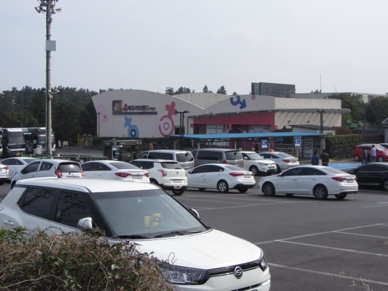
沿馬路一直往前走。
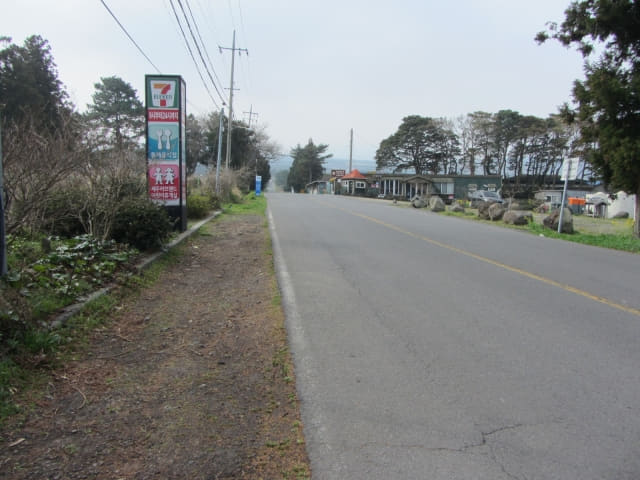
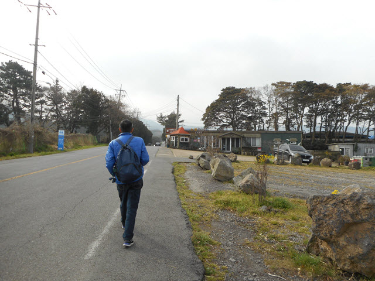
約三分鐘便到達神祕道路 (神奇之路)的遊覽區, 比估計的近很多。
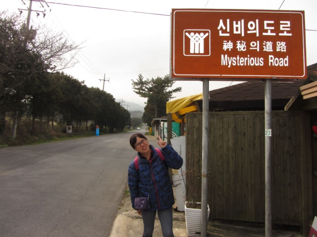
神祕道路遊覽區內的店舖。
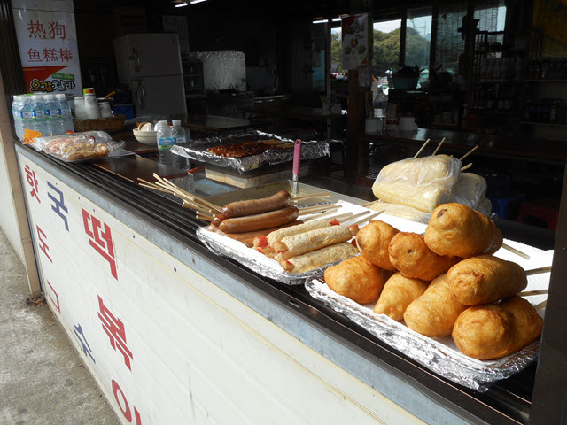
繼續往前走不到一分鐘便來到神祕道路的終點。但根據資料所示, 要感覺到這段道路的神祕, 要從起點朝終點的方向看。
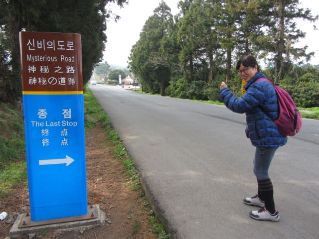
繼續往前走。
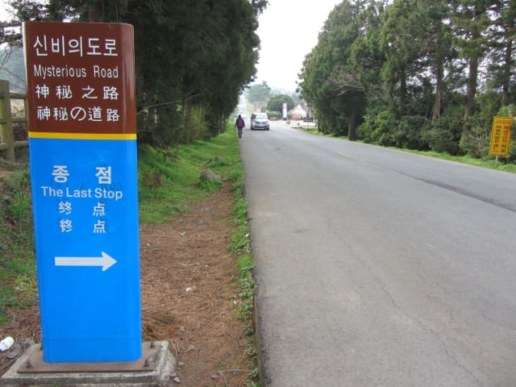
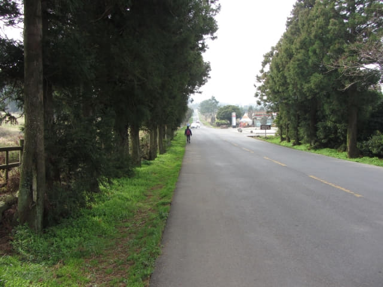
不消一會便來到神祕道路的起點。
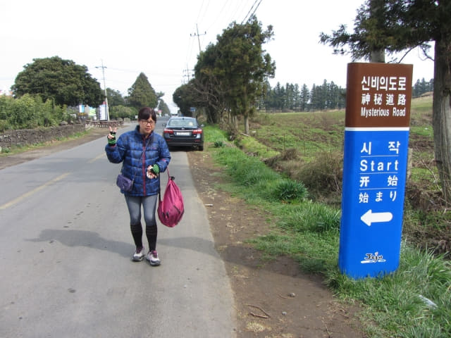
開始至終點上坡的錯覺???
接著掉頭從開始路標朝著終點路標的方向看及慢慢步行, 可以開始我們測試或感覺到這段道路的神祕。
測試一: 視覺的錯覺。據說這段路有上坡的錯覺, 但實際是下坡的。
結果: 失敗! 明明就是下坡道, 完全感覺不到上坡的錯覺。曾嘗試欺騙自己, 但最終都是失敗!
測試二 (其他旅客): 用圓的球放在路上, 看看會否向下滾動。
結果: 失敗! 地下凹凸不平, 球給卡住, 根本不可能滾動。
測試三 (其他旅客): 將水倒在路中, 看看會否向上流。
結果: 失敗! 地下凹凸不平, 又多裂縫, 水沿著馬路兩邊的裂縫四處流。
看著其他旅客不同的測試, 都一一失敗, 尤其是將水倒在路中的測試, 更害得我們幾乎笑爆嘴!
唉! 試 MUD 鬼啦! 根本就是一個大騙局!
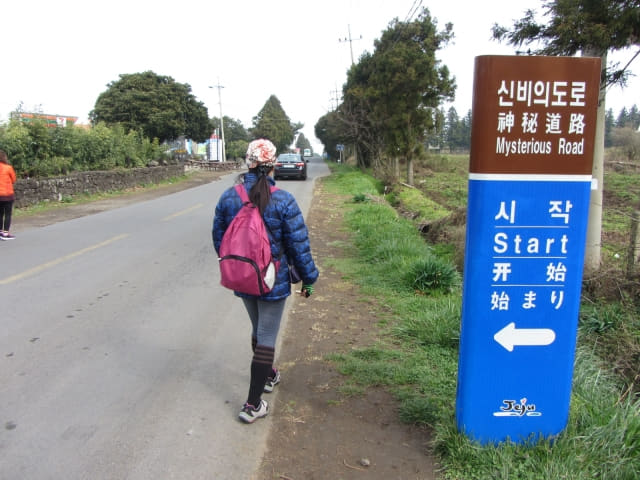

不消五分鐘便把這神祕道路的面紗掀開。幸好出發前對這「景點」根本沒有什麼寄望, 所以也沒有什麼失望。
既然來到, 看見還有少許時間, 不如到路旁的廣場看看。
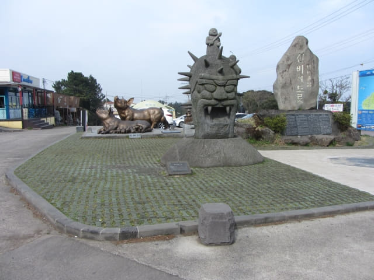
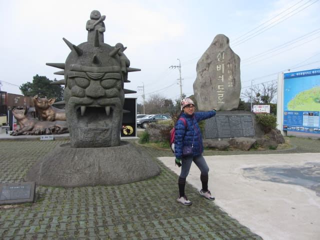
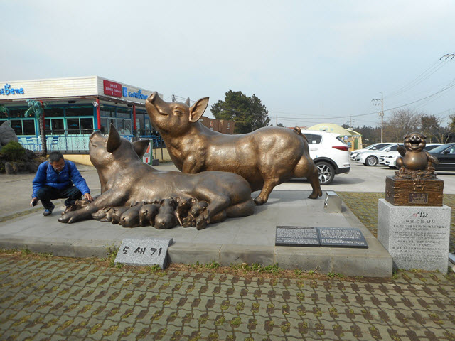
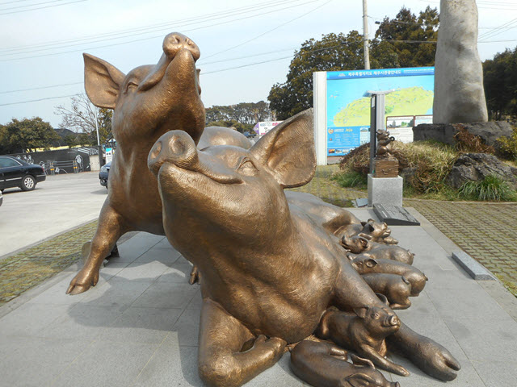
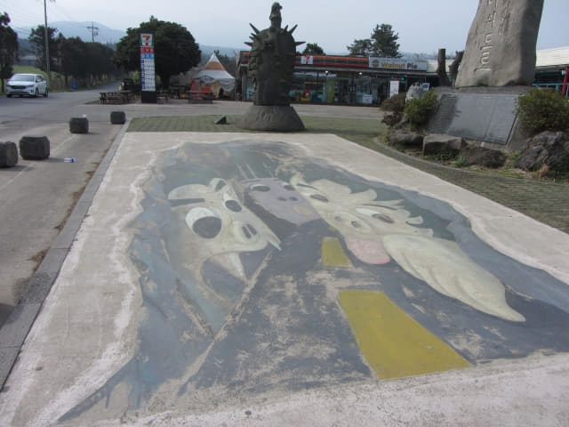
有些像日本女木島上的可愛鬼仔做型。
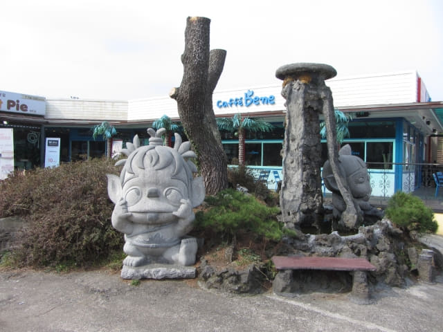

{kind=link}